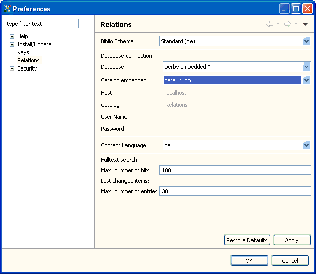

With the application's preferences you can define and modify some of the application's settings according to your needs. Click Utilities > Preferences... to display the preference pages, containing various pages for different topics. The Relations preference page is specific to the Relations application whereas the Keys preference page is adapted to the needs of this application. Use this preference page to modify the shortcut keys. The other preference pages are provided by the Eclipse platform.

The Relations preference page
Using the Relations preference page you can set the Biblio Schema to format bibliographical information, i.e. Text items.
The next section concerns the database connection. This form is identical to the dialog displayed to connect to a different data source, i.e. you can provide the connection information and the content language (used for fulltext indexing) here. The default values are 100 entries in the search result and 20 entries in the last changes view.
In the last section, you can set the values that limit the number of items displayed in the search result view and the last changes view respectively.
Note: It is possible to extend the application by providing additional schemes to format bibliographies. This can be done by providing a plug-in implementing the org.elbe.relations.bibliography extension point. In the same way you can provide a plug-in implementing the org.elbe.relations.configuration extension point to add another database configurations. Thus, you can connect to another external RDBMS.